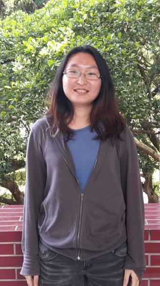
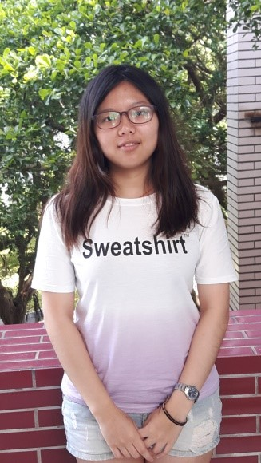
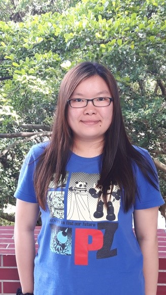
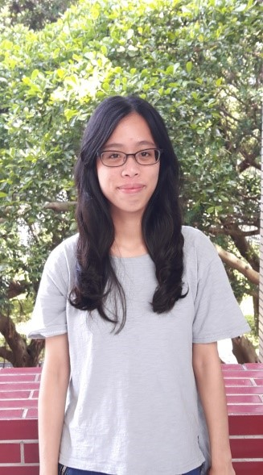

Team.
-

洪立蓉 資管四甲 10244145 ： APP 開發 、 介面設計
學到的東西很多，專題不僅是奉獻心力做出成品的畢業作業，更像是出社會前的最後一次磨練，不論是在溝通合作、開發技巧、文件撰寫技巧上，都有很大的進步和突破。特別是專題結束後，我更加有自己是準社會新鮮人的認知。專題帶給我很多東西，甚至有些東西是從無到有的，像是
1) 專題的成品
2) Android 開發能力
總之，對專題的整體心得就是，獲益良多~! -

林玫鈺 資管四乙 10244235 ： 圖表製作 、 網頁開發
這為期將近一年的專題，經歷了許多波折，先是找尋想要的主題而每個星期花費時間開會與找題目，之後終於找到主題後開始進行資料的收集和密集討論初審資料；之後為了複審的實作，我們有人學習APP製作，有人製作網頁，大家都盡自己最大的努力來完成專題，雖然其中有時會有不愉快發生，但還是一起經歷了所有難關。一個從無到有的APP與網頁，我們雖然沒有做出最完美的成品，但自己在用Time Farmer時，就會覺得之前花費的時間是值得的。這次經驗，不只是團隊合作也是理解自己可以做到哪個程度，雖然還需改進的地方有很多，不過非常感謝其他三位組員的幫忙及協助。
-

鄭郁潔 資管四乙 10244239 ： 圖片繪製 、 網頁開發
經過這次專題的進行，從一開始題目的發想，到真的開始實作，每個過程都很需要團隊的溝通與合作，才能成就專題的成果，也因為專題的關係，讓我多認識、了解了關於我們所做的專題相關專業的東西，一些技術方面的東西也是從0開始慢慢摸索，感謝一起奮鬥的組員們，在這一年內一起成長，也感謝一路上幫助我們的人，還有指導老師一開始對我們的指導，這次專題是個很棒的經驗。 -

李怡瑩 資管四乙 10244249 ： 海報製作 、 時程規劃
過這次的專題，讓我學習成長許多，不管是在論文撰寫方面、專案的開發與執行上，一個專案的從無到有是需要多少的努力及團隊的合作，每一個小細節也都不能放過。很開心最後有了不錯的成果，組員們辛苦了！專題結束了，而未來的挑戰才將開始，我們會繼續努力，朝著目標前進，加油！